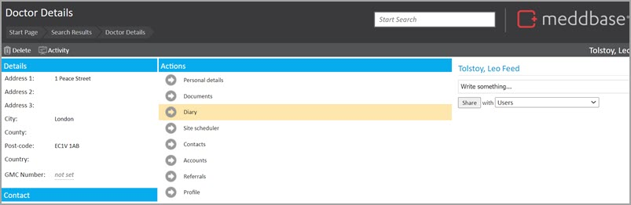
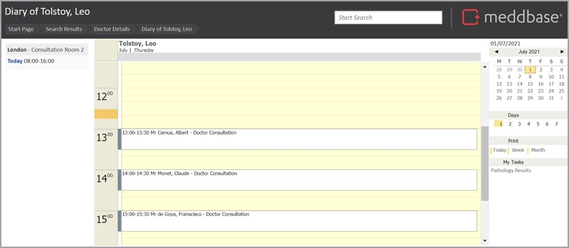
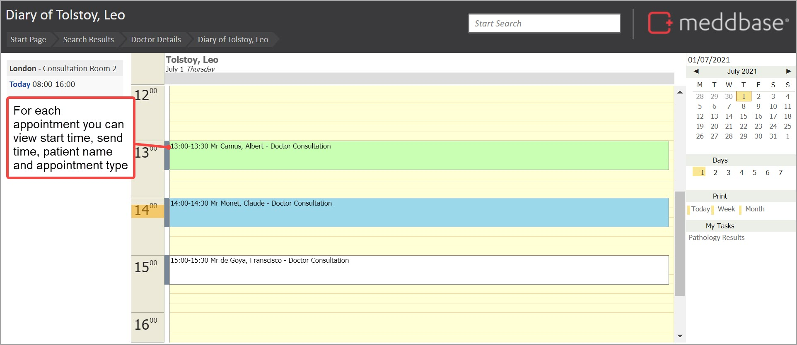
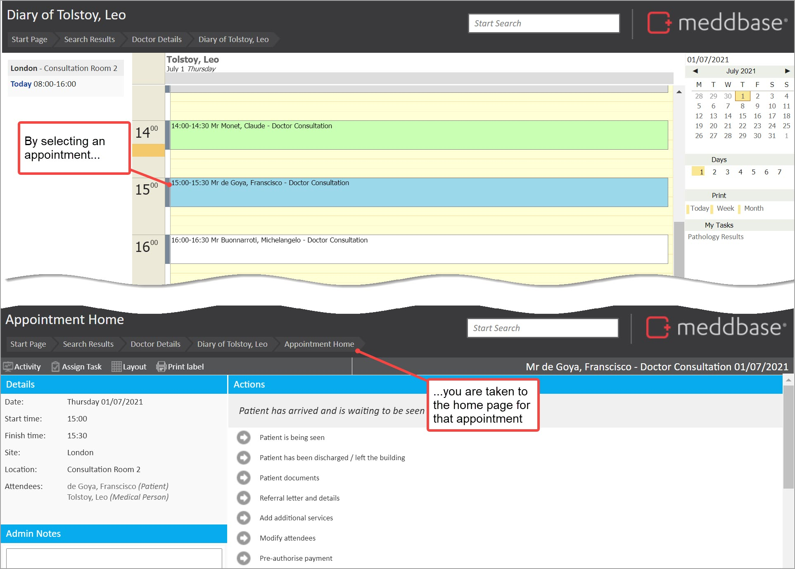
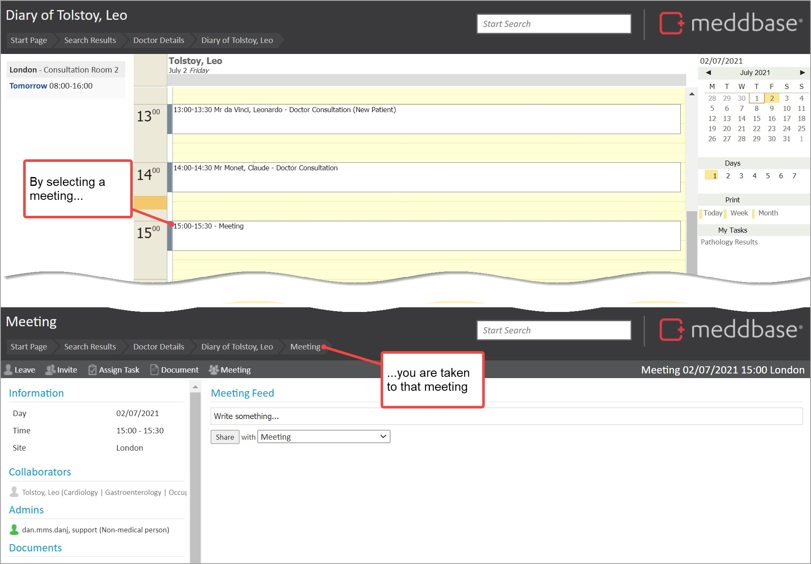
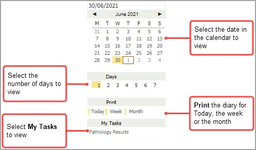
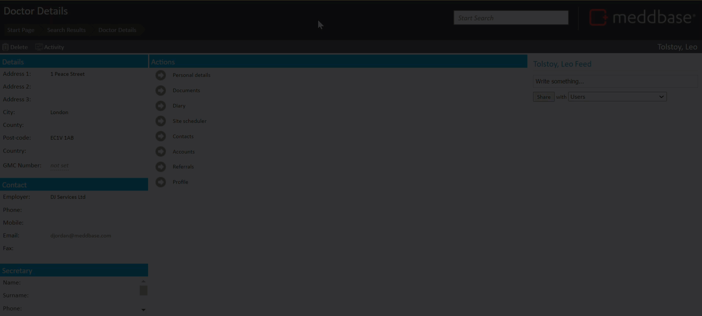

To walk-through how you can view a Clinician's diary and summarise the actions you can take.
To view a particular clinician's diary, you will need to follow these steps:

The Diary for the clinician is displayed.

From the diary, you can see a range of features and take a range of actions. These are noted below.
By viewing the diary, you can see appointment details for each appointment including:

Identify the status for each appointment via the background colour for the appointment in the diary. As summarised below.
| Background colour | Meaning |
| Grey | The patient has been discharged |
| Green | The patient is being seen |
| Blue | The patient has arrived and is waiting to be seen |
| Red | The patient did not arrive |
| White | The patient has not yet arrived. |
By selecting an appointment from the clinician diary, you are taken to the appointment home page from where further actions can be taken.

Meetings for which the clinician has been recorded as an attendee are displayed in the Clinician's Diary. When you select the meeting, you are taken to the page for that meeting.

There is a panel to the right of the diary which allows you carry out a range of tasks in relation to the clinician and their diary. Namely to:

The short video below shows some of the steps discussed above. Specifically:
